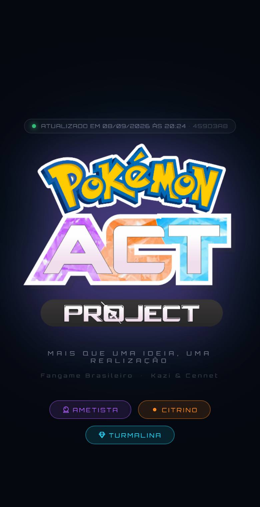
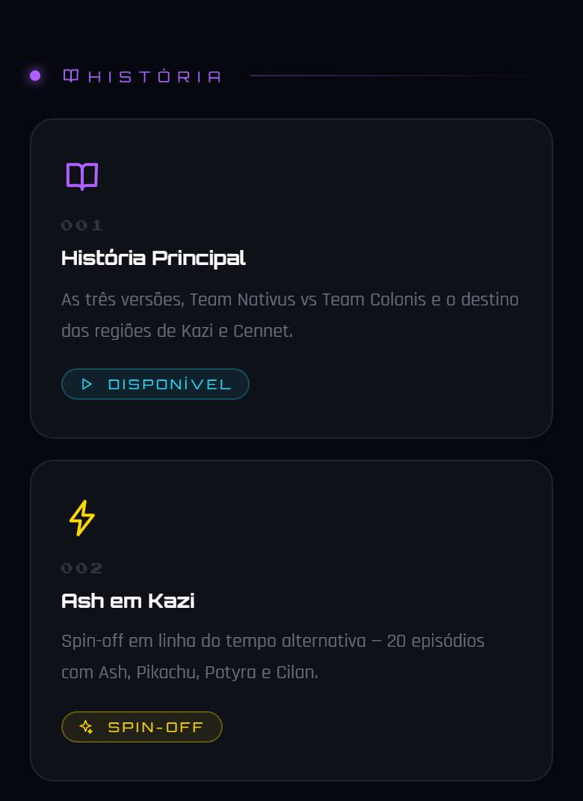
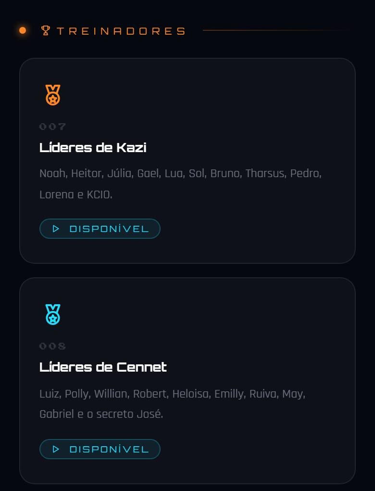
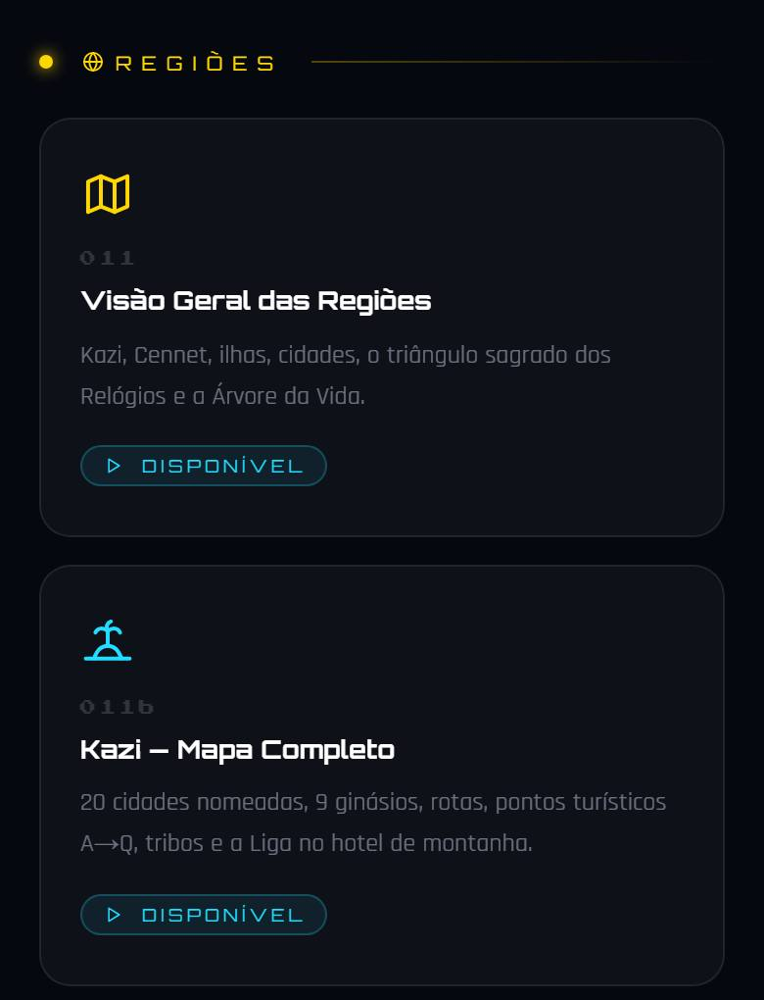
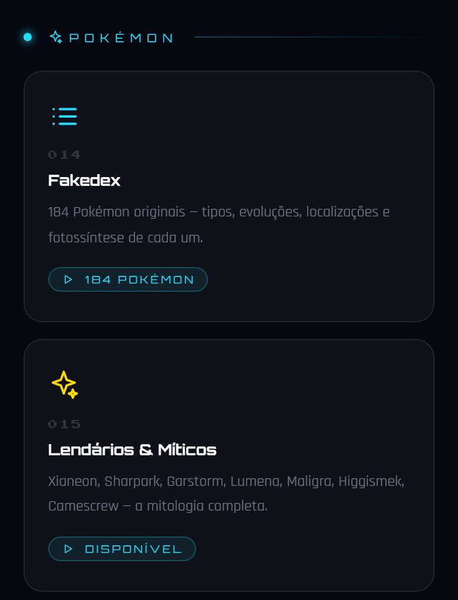

O que é novo
- Cada assunto agora é um cartão numerado, com selo de disponível ou spin-off.
- A Fakedex tem os 184 Pokémon originais do ACT.
Início

Abertura
A logo do ACT e as três versões (Ametista, Citrino e Turmalina). Em cima fica a data da última vez que o site foi publicado: hoje mostra 08/09/2026.
- Rolar pra baixo: chega nos cartões de cada assunto.

Os cartões
Cada assunto é um cartão numerado, agrupado por tema: História, Personagens, Treinadores, Regiões e os Pokémon.
- Tocar no cartão: abre a página daquele assunto.
- O selo do cartão diz se a página já está disponível ou se é spin-off.
Assuntos

Treinadores
Líderes de Kazi e de Cennet, ginásios, Elite dos 4 e o Palácio dos Campeões.

Regiões
Visão geral, o mapa completo de Kazi, Cennet, aldeias nativas, fazendas, estações e a Batalha de Bandas.

Pokémon
A Fakedex com os 184 Pokémon originais, lendários e míticos, golpes assinatura, Eeveelutions e os sistemas próprios do ACT.
Mudar o site
Texto e páginas novas
Cada assunto é uma página do site. Pra mudar ou criar uma, pede pro Orfeu na Geral com o que entra.
- O que falta no ACT vai na aba A fazer do projeto no app.
Publicar
O site fica no Netlify. Depois de mudar, ele sobe de novo e a data em cima da abertura passa a ser a do dia.